6. AI Factsheet¶
The government of ML Models is managed from AI Use Cases. These AI Use Cases document the whole lifecycle of your models, from the initial planning to the monitoring of models in Production.
This capability is provided by either the service FactSheets or watsonx.governance.
Exercise 1: Create an AI Use Case¶
-
Go to menu AI Governance > AI use cases.
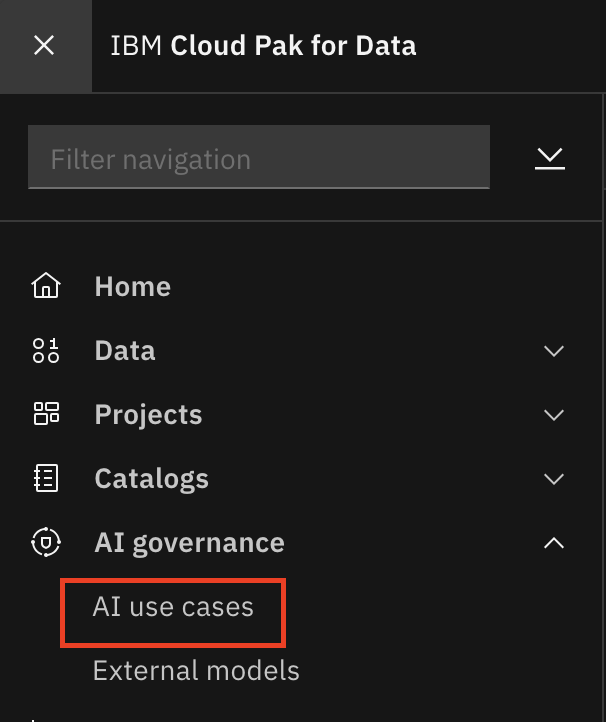
-
Click New AI use case.
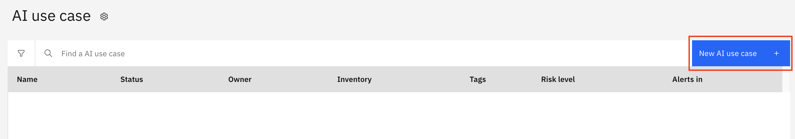
-
Insert the following information to create your AI Use Case for predicting your customers' churn:
- Name: "
Churn Prediction" (for example: user0 Churn Prediction) - Risk Level: Set whatever risk level you want for this use case
- Inventory: AI_inventory
- Purpose: "Predict if customers are going to churn"
- Status: "Awaiting development"
- Tags: "Churn"
Info
Note all the available values in Status. This field documents all the lifecycle stages
Then click Create.
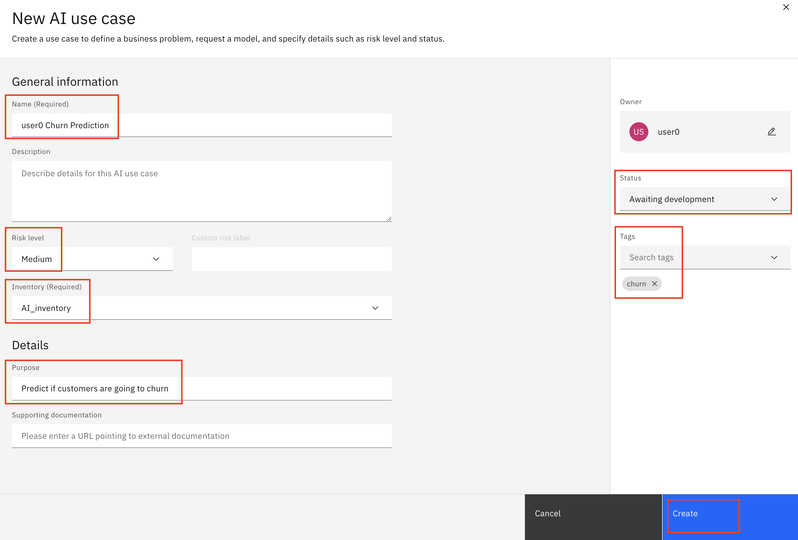
- Name: "
-
Your new AI Use Case has been created. All the deployment, training, promoting, and monitoring actions related to this use case will be documented here. Click Lifecycle.
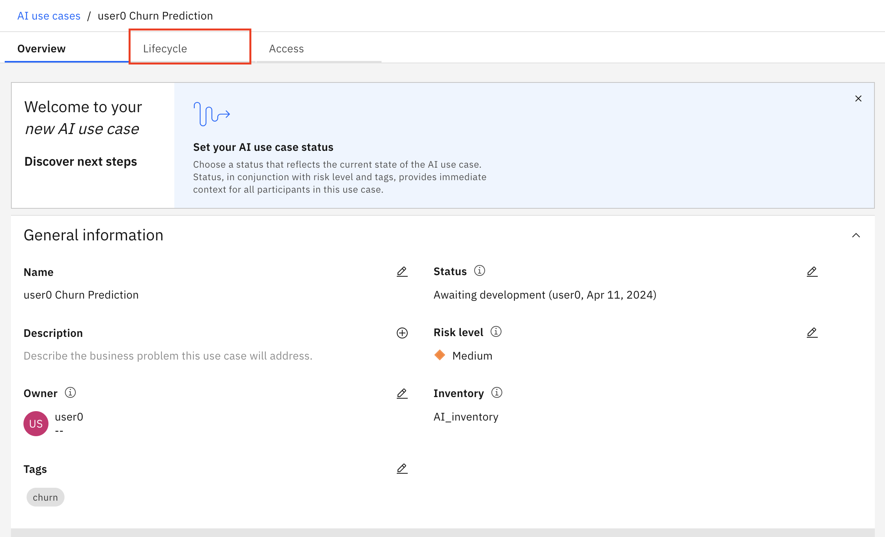
Info
You could create different approaches to this use case, and track your models in the approach each of them is using. In this workshop we'll just use the Default approach, so no additional action is needed.
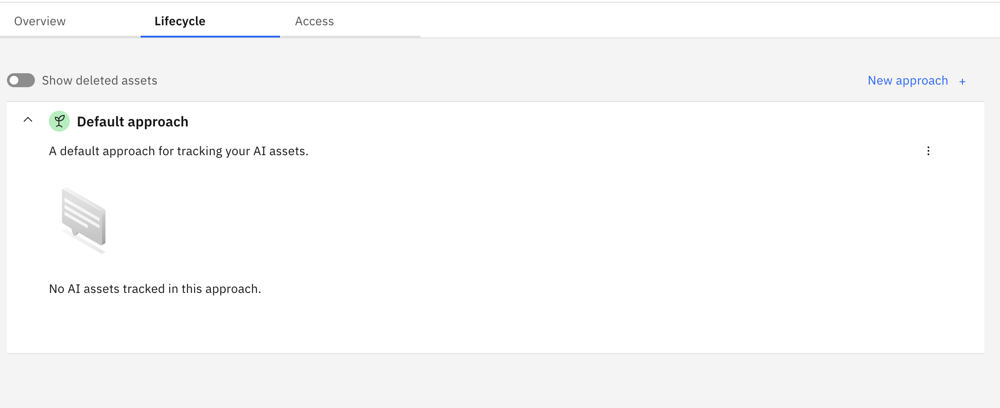
Exercise 2: Track your Model in the AI use case¶
-
Navigate back to the project assets by clicking your project's name and then clicking the Assets tab.
Click on the name of your saved model
_autoai_churn_prediction - P5 Extra Trees Classifier - Model to open it. 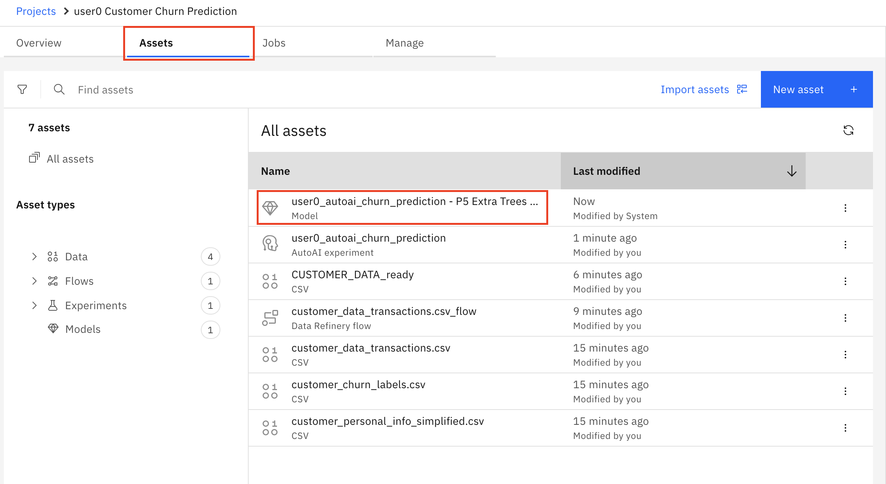
-
Feel free to check all the information available now; as the lifecycle continues, more sections will be populated.
Info
This view contains all the governance information of your model. It includes information about the use case, how the model was trained, which data was used to train it, the evaluations of the model, the monitoring alerts...
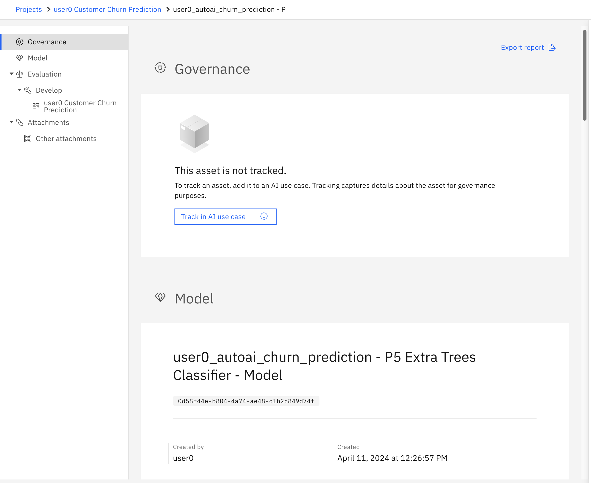
-
Click Track in AI use case.
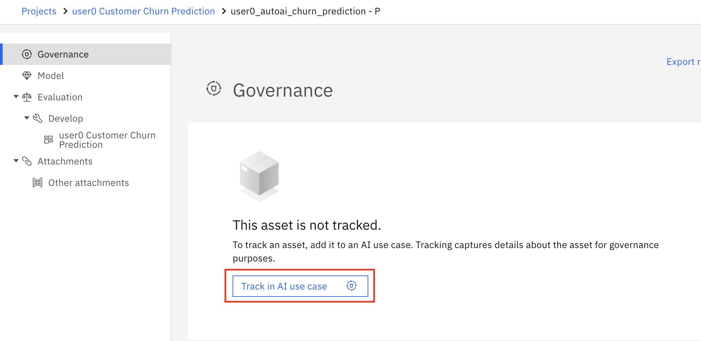
-
Select your AI Use Case then click Next.
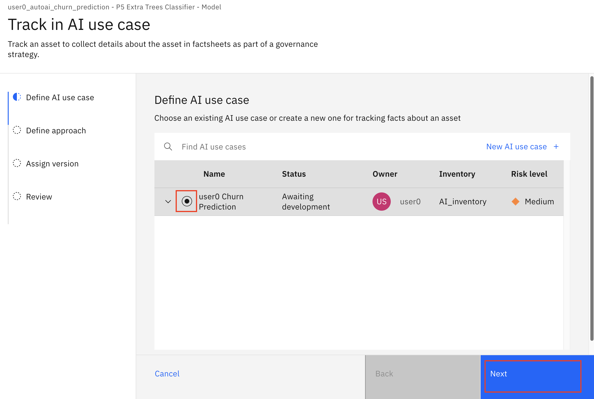
-
You'll use the Default approach. You could've created different approaches for the use case. Click Next.
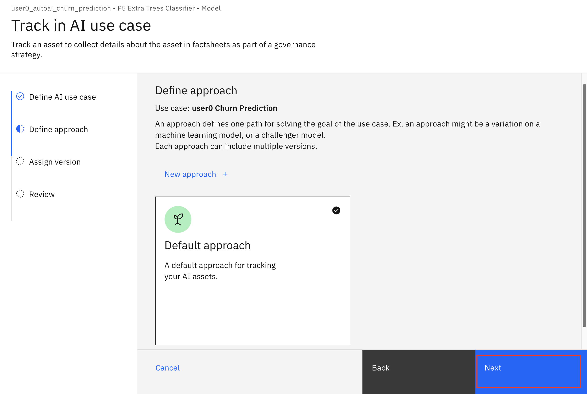
-
You can set a version number to this specific model. In this case, it's not been tested yet, so select version 0.0.1. Then click Next.
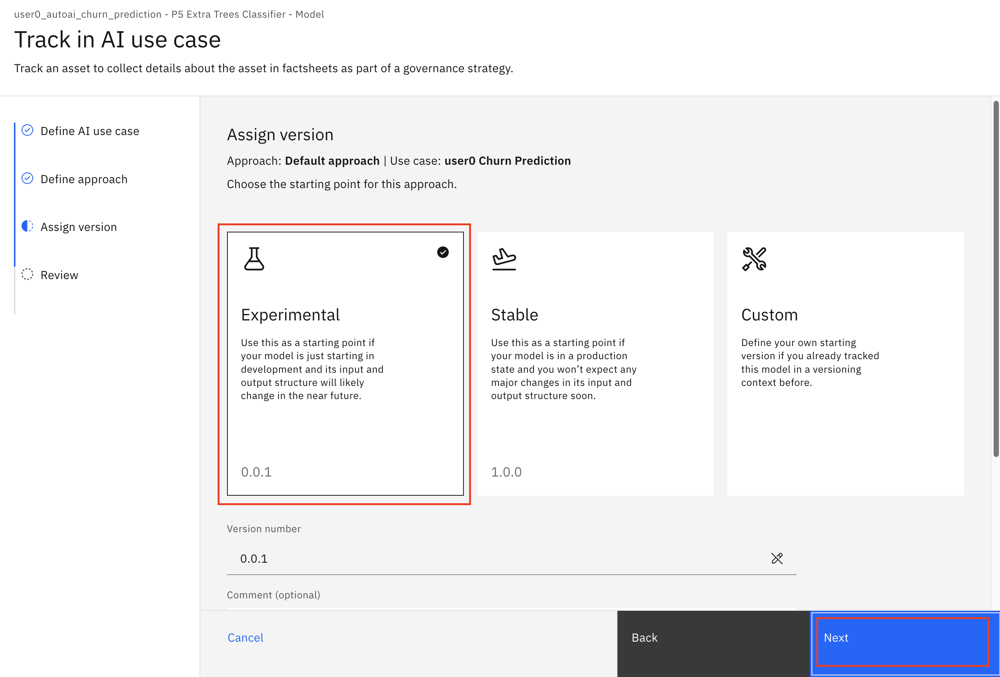
-
Click Track asset.
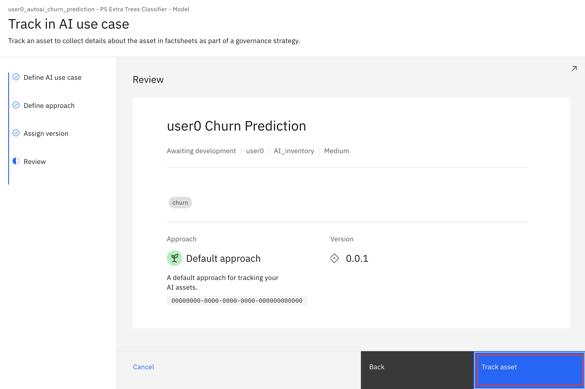
Info
The information of your model indicates that the model is in the Development phase, as it has not been deployed for testing yet.
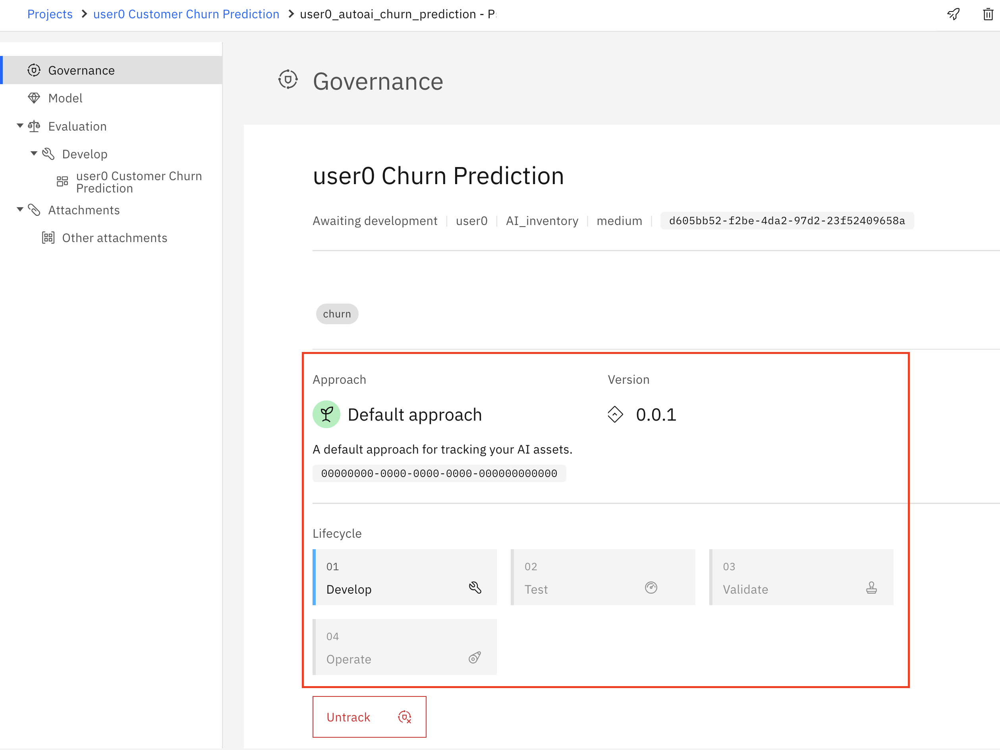
-
Check your AI Use Case. Go to menu AI Governance > AI use cases.
-
Then open your use case.
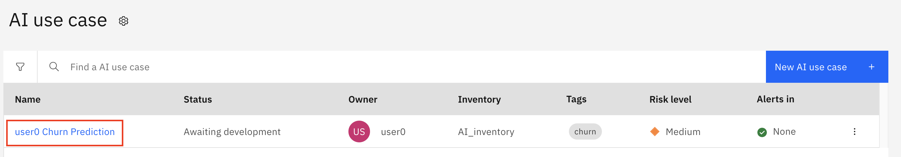
-
Go to the Lifecycle tab. This tab shows which assets are being used in each stage of the model's lifecycle. Note that your trained model has been added to the Develop step. Besides, all available model versions are shown in this view.
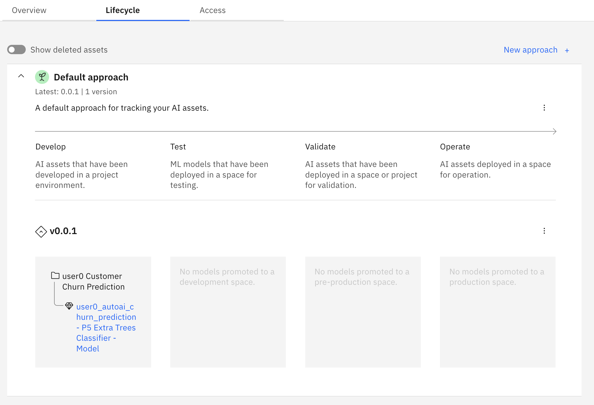